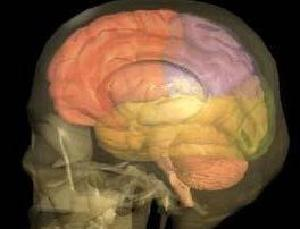

Human Nature
Brain and Behavior
The Fundamentals
Whether you take sides in the nature/nurture debate (still raging) or agree that it's a draw, surely it's impossible to separate the dancer from the dance if you want to make sense of the show.
To understand human behavior at all, then, we need first to look at the biological foundations, the mechanisms of reaction and connection that enable us to interact with the world. In this series we have three pages to explore:
• Brain and Behavior: The Fundamentals found below,
• Development, Personality, and Stage Theories as page two, and a look at
• Motivation and Emotion wrapping up our look at traditional psychology.
Which came first, the mind or the brain?

Except for matters of religion and ethics, the question wouldn't seem important. After all, psychology is about behavior. As long as mind and brain are bosom buddies that do everything together, who cares which one calls the shots?
Yet the distinction between mind and brain (whether such a distinction exists in reality) and the question of which one dominates the other affect everything we do. Consider antidepressant drugs, antipsychotic drugs, hallucinogens, alcohol, painkillers, PMS, the "Twinkie defense" . . . obviously, brain chemistry affects the way the mind functions. Even so, is anybody out there who doesn't, deep down, believe in "mind over matter"?
The fact is, at our current stage of development, the physiological systems we inherit determinemore or lesswhat we can do. (You can't flap your wingsa behavior manifested by birds, including those that can't fly. Whether or not you can levitate by other means is another matter.)
So, define behavior. It boils down to this: behavior is any observable action or response of an organism. Many reduce it even further: behavior is movement. For now, let's stick with the condition that the response be observable.
You are able to move because you have certain essential physiological mechanisms: receptors, neural transmitters, and effectors. Pin pricks skin: sensory nerve endings receive that information, generate nerve impulses that travel to the spinal cord and from there to the muscles that effect evasive action. Simple, no? No. If you feel pain (and not incidentally learn that getting stuck by a pin can hurt), it means that additional nerve impulses have been sent all the way to the brain. Since the brain has about 14-billion individual nerve cells, with something like a million billion connections, what keeps your head from exploding when that pin-stuck-me message arrives? Organization.
The brain may look like three pounds of wet macaroni, but it's probably the most complex and highly organized structure on the planet. So large and complex, most of it doesn't develop until after birth: it takes maybe 16 years to gel, while we grow conscience, memory, and other cognitive, motor, and integrative functions. So large, it folds in on itself just to fit inside the skull.
That is, it's large in relation to body weight. In comparison, an elephant's brain is about 4 times bigger than a human brain, but its body can weigh nearly 100 times more. Intellectually speaking, not presidential material. On the other hand, squirrels actually have larger brains, relatively, than we do. So it must be the complex structure of the human brain and the density of its neurons that enabled you to ace your driver's license exam.
Nervous breakdown
The brain begins, along with the rest of the central nervous system, as a hollow neural tube in the developing embryo. After the first three weeks, while the head (cephalic) end grows like heck, compared to the remaining (caudal) two-thirds of the tube, three distinct regions have developed: the forebrain, the midbrain, and the hindbrain. These will continue to grow into the telencephalon (end-brain) and diencephalon (between-brain); the mesencephalon (still the midbrain); and the metencephalon (change-brain) and the myencephalon (spine-brain), which narrows down into the spinal cord where the skull hooks onto the spine.
So, from three regions we grow five, which further differentiate to become the cerebrum (Latin for brain); the thalamus (a sort of cerebral switchboard), hypothalamus (concerned with visceral reflexes, emotional reactions, and drives, such as hunger and thirst), and epithalamus (pineal gland); the colliculi (receive visual and auditory input) and cerebral peduncles (pretty much everything else in the midbrain); the pons (relays sensory information) and cerebellum (coordinates muscle activity, controls equilibrium, body position, muscle tone); and the medulla oblongata (controls automatic functions such as breathing and heartbeat and relays information between the brain and the spinal cord).
Now the skull is getting crowded. The cerebrum hogs about 85% of the mental matter in humans; it enables higher-order thinking skills, reason, language, and verbal memory. Its cortex, the roughly quarter-inch layer that covers it, is the part of the brain that developed most recently, just in the last 30-million years or so. As they enlarge, the cerebum and cortex wrinkle and fold to fit inside the cranium.
Fissures develop, further dividing the cerebrum. A deep groove, front to back, separates it into two hemispheres, connected by a thick bundle of nerve fibers called the corpus callosum. More fissures section each side into frontal, parietal, occipital, and temporal lobes. Each hemisphere receives sensory input from the side of the body opposite to it and has general motor control of that opposing side. The halves aren't identical, either; one side, usually the left, tends to dominate, and certain higher intellectual functions seem to be associated with each hemisphere, though the distinctions aren't clearthe differences may lie in the way each side processes information.
Lizard logic / Monkey mind / Newbie nous
Early on, human embryos look very much like fish embryos, which look very much like cat embryos, which look . . . a lot like human embryos. Up to a point, all vertebrates go through the same sequence to start growing certain basic parts and pieces: backbones, spinal cords, limb buds, the beginnings of eyes and brains. The genetic code that directs this sequence is incredibly complex, even for fish. Any change at all in a successful genetic program can have radical effectsnot necessarily favorable oneslater on. So as we evolved over millions of years, we did it mostly by adding on to the prototype. But we still start out looking much like fish.
That basic, embryonic neural tube that develops a head end and a tail end, grows a brain bulge and a spinal cord, differentiates into a brain and a brain stem, a forebrain, midbrain, and hindbrain, keeps right on growing layer upon layer to achieve, ultimately, a cortex, wrapped around the package like a birthday gift.
All vertebrates have one, though it's barely there in fish and frogs. Its growth accelerated spectacularly in Homo sapiens, just in the last 3-million years or so; hence, neocortex or new brain. Brain structures that develop earlier, that lie deep under the cortex in humans, dominate in other vertebrates. Even so, they're critically important to human behavior.
Lying beneath the cortex, the limbic system is often called the mammalian brain or, because it regulates such functions as hunger, thirst, sleep, and heart rate, the visceral brain; it first appeared in small mammals about 150-million years ago. The mammal mind regulates hormones via the pituitary gland; it involves the emotions, social attachment, altruism, possibly ethics, and the sense of smell.
Deeper still, at the base of the brain, the brain stem and cerebellum constitute the oldest part, mirroring the major brain structures of reptiles. Accordingly called the reptilian brain (or R-complex in humans), it first appeared in fish nearly 500-million years ago and took another 250-million years to reach its most advanced stage of development. Lizard logic handles matters of survival: vital functions, such as breathing and body temperature; aggression and fear (fight or flight); repetitive and ritualistic behavior; and recognition of territory and social hierarchies.
This "triune brain," originally described by Paul MacLean (who became chief of the Laboratory of Brain Evolution and Behavior, National Institute of Mental Health, in 1971), "amounts to three interconnected biological computers, each with its own special intelligence, its own subjectivity, its own sense of time and space, its own memory, motor, and other functions. Thus we are obligated to look at ourselves and the world through the eyes of three quite different mentalities."
Although all parts of the brain are in constant, staggeringly complex communication and coordination, including some functional overlap (the notion that we use only about 10% of our brain is wishful thinking), MacLean's research suggests that the supremely gifted, shiny new cortex, our "thinking cap," does not necessarily have final say.
Sometimes, the emotional monkey mind or obsessive-compulsive lizard logic takes over. Survival of the fittest.
^ Top ^